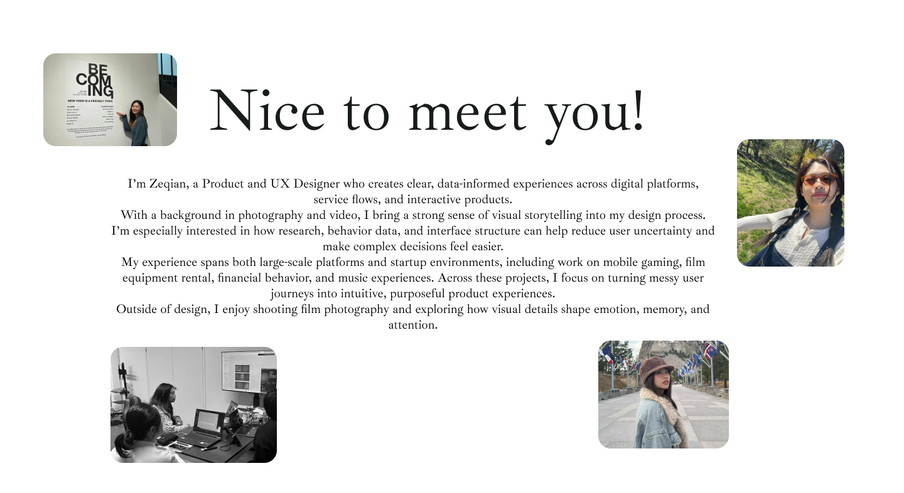

Portfolio
About
I’m Cherry Li, a designer focused on product UX, systems thinking, and craft across web and native surfaces. This page is a lightweight placeholder you can replace with your bio, timeline, and links.
Edit this file at about/index.html in your export — layout and type match the rest of the site’s monospace navigation tone.

get_screenshot).
Open in Figma.
Contact
Add email or social links here when you’re ready.